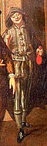

1660
• MOLI�RE
12 mars-9 avril : Cl�ture de P�ques. Mort de Jodelet.
6 avril : Mort du fr�re cadet de Moli�re, Jean. Le dramaturge reprend la charge de tapissier du roi, dont il s'�tait d�mis en 1643, et il la gardera jusqu'� sa mort.
28 mai : Premi�re de Sganarelle ou le Cocu imaginaire, qui reste trois mois � l'affiche.
11 octobre : Sans pr�avis, le surintendant des b�timents, M. de Ratabon, fait d�molir la salle du Petit-Bourbon, qui g�ne la construction de la colonnade du Louvre. La troupe obtient la salle du Palais-Royal, construite par Richelieu vingt ans plus t�t. Les com�diens rivaux de l'H�tel de Bourgogne et du Marais essaient de diviser la troupe en faisant aux com�diens des propositions, mais ils restent unis autour de Moli�re.
• POLITIQUE ET SOCI�T�
Restauration en Angleterre des Stuarts: Charles II.
Formulaire impos� aux jans�nistes. Les lettres provinciales sont condamn�es et br�l�es.
Mariage de Louis XIV et de Marie-Th�r�se.
• ARTS, SCIENCES ET RELIGION
Mort de V�lasquez.
